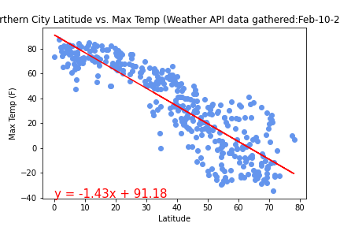
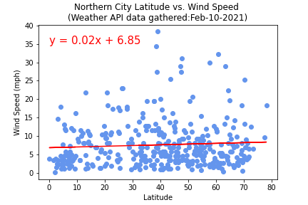

Summary: Latitude vs. X

The purpose of this project was to analyze how weather changes with latitude. To accomplish this we pulled data from OpenWeatherMapAPI for 544 randomly selected cities.
We used Matplotlib to pot various aspects of the weather compared to city latitude. The weather attributes we looked at included: temperature, cloudiness, wind speed, and humidity. This site provides the source data and visualizations created as part of the analysis.
Overall the only weather attribute to show a strong correlation with latitude was temperature. The below linear regression of northern hemiphere cities vs temp shows strong negative correlation (rValue:-.87). As latitude goes up (traveling North away from the equator), the temperature goes down.
Compare that to the below regression of northern latitude cities vs wind speed. No real correlation shown, as confirmed with low rValue of .06
